快速入门¶
学习任何一门技术,其实都需要练习.本章我们将采用案例驱动的方式来带领大家学习STM32, 我们首先需要对我们的工程做一个基础的配置.
不管做什么案例,我们都需要对芯片做一些基础配置
基础配置¶
选择芯片¶
大家打开CubeMX,然后选择新建工程,在MPU选择的这个输入框中输入STM32F103VE然后根据提示双击右下方的STM32F103VET6,这样我们的芯片就选择好啦!
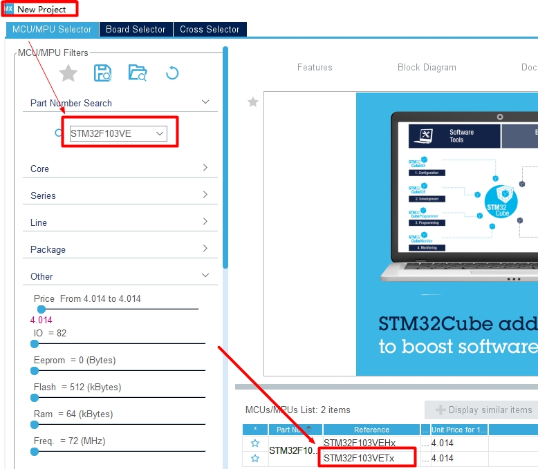
选择好芯片之后, 界面如下图所示
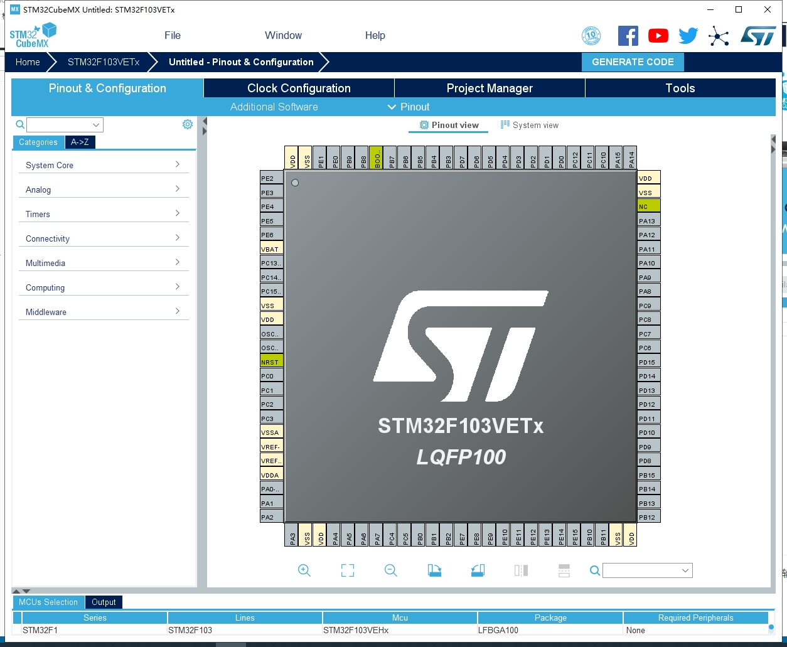
打开串口调试¶
为了能够让代码烧写到芯片中,我们需要打开串口调试功能.操作流程如下图所示
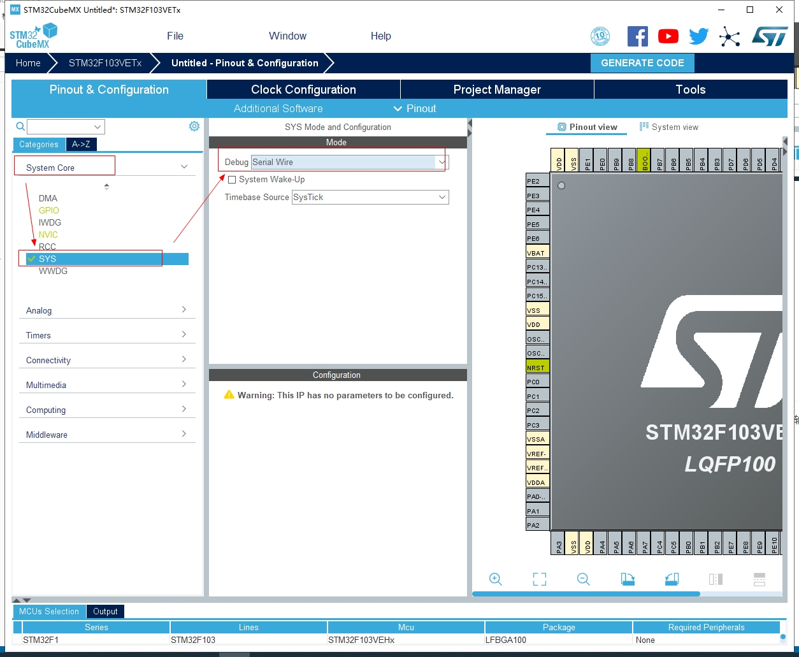
配置时钟¶
单片机的时钟如同人的心脏一样重要, 例如我们将单片的时钟设置为72M, 它的含义就是让单片机1秒钟执行72000,000 次. 如果我们利用时钟来计数, 单片机时钟每跳动一次, 计数值+1, 那么1秒钟之后,这个数就是72000,000. 也就是时钟每跳动一次,就执行一行代码.
所以我们是把时钟配置快一点好,还是慢一点好呢? 当然是要快一点啊!
参照如下图, 我们打开高速时钟和低速时钟配置
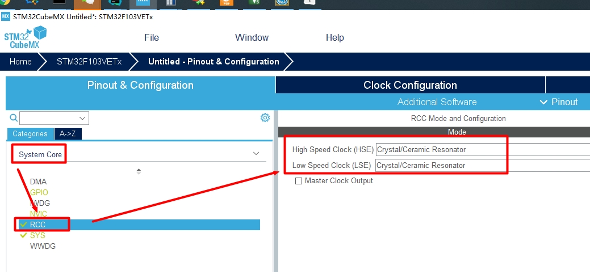
然后打开Clock Configuration 配置,在HCLK 中输入72,然后按回车键, 此时程序会弹窗询问你是否让程序自动配置其它的配置, 单击OK确定即可完成时钟的配置.
这里芯片最高支持72M,所以我们填入最高配置即可.
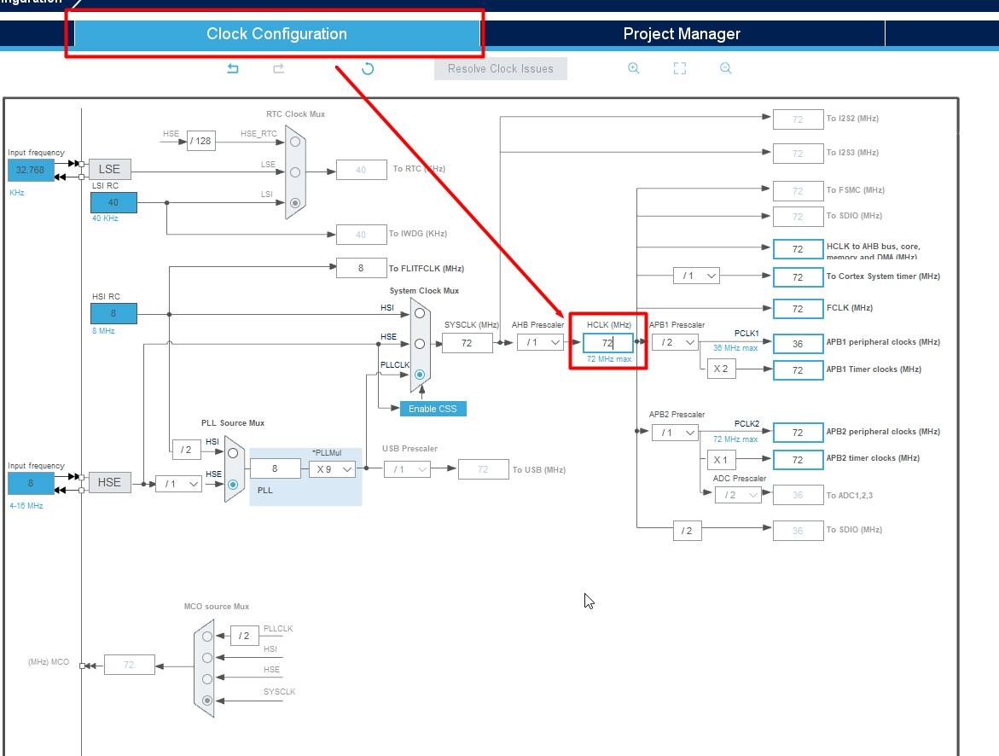
至此,我们就完成了芯片的基础配置. 后续无论做什么什么案例,这个配置都是需要的.
下面我们再按照下图的步骤,将我们的工程导出在Clion中去使用
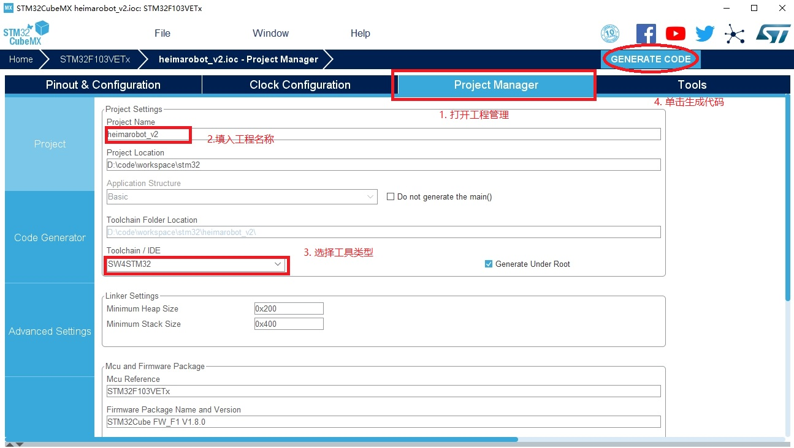
代码生成完成之后, 我们用Clion打开就可以对它进行编程啦!
1. 闪烁led灯¶
这一小节,我们先来做一个简单的点亮LED灯案例, 要想控制单片机去驱动LED灯, 我们需要用到单片机的GPIO.
GPIO(General-purpose input/output)是通用型输入输出的简称，简单来说就是我们可以通过编程的方式来控制单片机引脚的输入与输出.
输入就是读取单片机引脚的电平状态, 是高电平还是低电平. 我们把可以把5v理解为高电平, 0v理解为低电平.
输出就是我们控制IO的状态为高电平或者低电平.
下面我们就以点亮一个Led灯为例,来学习一下GPIO口的输出功能
我们首先打开CubeMX,设定PE10引脚为输出功能
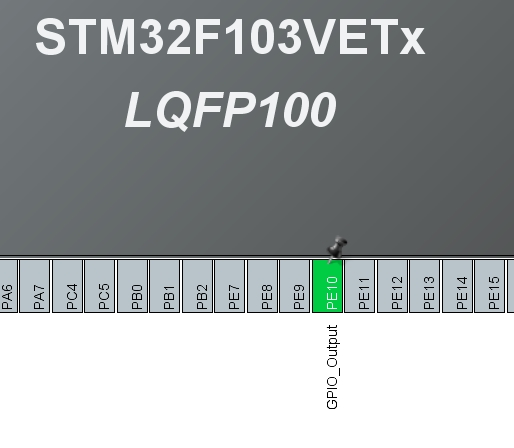
演示效果如下:
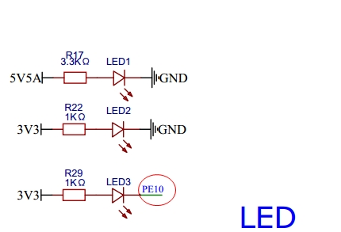
根据上面的这个电路图,在我们的这块PCB板子上,一共有3个LED灯, 然而只有LED3是连接在STM32上的PE10引脚, 所以我们控制PE10的IO状态就可以控制LED灯的亮灭.
按照电路图,LED的一端已经连接了高电平, 那么PE10这一端我们需要给它低电平,才能让灯亮起来
1 | |
如果想让灯灭的话, 我们需要给PE10这一端设定为高电平
1 | |
如果想让LED间隔一定时间闪烁的话,我们可以采用如下的方式:
1 2 3 4 5 | |
好啦,本小节我们就通过一个简单的LED灯带领大家学习了一些IO的输出控制.
练一练¶
利用刚学过的内容,大家试一试能不能让我们PCB板上的蜂鸣器响起来呢 ?
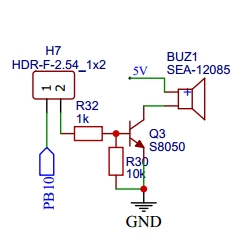
2. 开关的使用¶
本小节我们要给大家讲的是开关的使用,对于GPIO来说我们读取开关状态其实就是要读取IO口的电平变化.
下面我们先来看一下电路图,开关对应的是哪个引脚
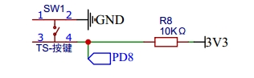
根据电路图,我们先通过CubeMx来设置工程,将PD8设置为输入模式, 设定好之后需要重新生成工程.
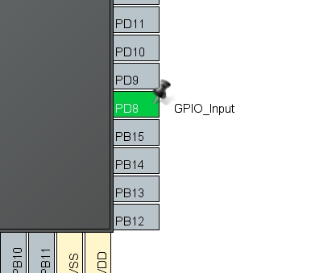
默认情况下, PD8是高电平, 当开关按下之后,PD8就会变成低电平. 为了便于观看效果,所以我们就通过开关来控制LED灯的亮灭
我们首先来写一个测试代码
1 2 3 4 | |
我们发现LED灯并不亮,间接的证明了PD10默认是高电平. 当我们将按键按下的时候, PD8变为低电平, 然后LED3亮起来了.这就是我们通过开关控制了LED灯.
但是这种控制方式,其实是有弊端的, 当我们按下,手指没有抬起的时候, 上面的逻辑会一直不停的运行, 这与我们开关的想法有差异, 我们希望手指按下开关到手指抬起, 开关的逻辑只执行一次,所以我们需要来解决这个问题. 下面给出了一段示例代码,大家可以分析一下.
1 2 3 4 5 6 7 8 9 10 11 12 13 14 | |
3. USART通讯¶
由于STM32编程不能像我们之前编程一样很直观的输出Hello World!,这里我们首先来教大家如何通过串口通讯输出日志.我们这里首先要给大家介绍的是USART
USART:(Universal Synchronous/Asynchronous Receiver/Transmitter) 通用同步/异步串行接收/发送器,USART 是一个全双工通用同步/异步串行收发模块，该接口是一个高度灵活的串行通信设备
简单收发¶
这里为了简单演示,我们先采用阻塞的方式进行数据的收发, 我们首先需要在Cubemx中打开串口通讯接口
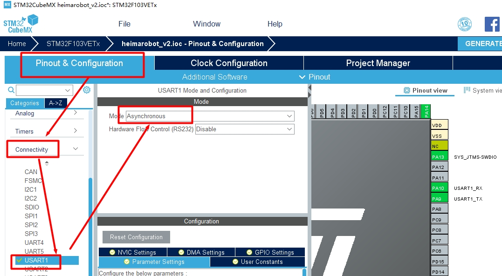
同样的配置完成之后,我们需要重新生成代码.
- 发送消息
1 2 | |
- 接收消息
1 2 3 4 | |
中断方式接收消息¶
中断是指计算机运行过程中，出现某些特殊情况需主机干预时，机器能自动停止正在运行的程序并转入处理新情况的程序，处理完毕后又返回原被暂停的程序继续运行。
对于我们程序的中断来说,我们可以把单片机看成是一个主循环, 当中断发生的时候, 程序跳转去执行中断程序,当中断程序执行完成之后, 单片机又继续去执行主循环.
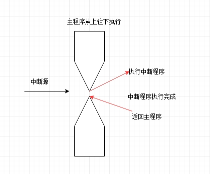
要想使用中断的方式进行接收,我们需要在cubemx中开启中断,然后实现中断回调函数
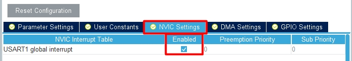
接下来我们就可以使用中断的方式来接收数据了, 我们先在全局声明一个数组容器:
1 | |
容器的大小我指定为1的意思,当接收到1个字节数据, 程序就进入中断处理函数,我们需要在程序中将这个void HAL_UART_RxCpltCallback(UART_HandleTypeDef *huart)函数重写
1 2 3 4 5 6 | |
上面工作做完之后,我们就可以在main函数中首次使能中断接收
1 | |
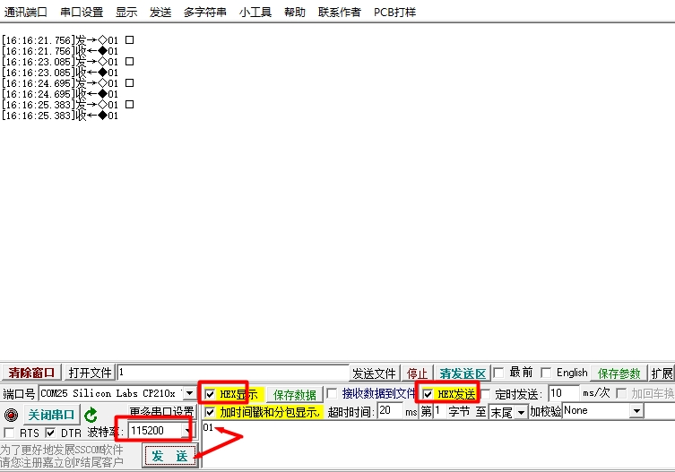
从实验结果我们可以看出, 每次发送一个字节的数据出去, 单片机都立马返回了一字节的数据回来.
重定向printf¶
大家可能会发现上面的打印挺麻烦的.在STM32开发中我们其实也可以像C语言那样使用printf进行输出，只不过C语言中默认输出到控制台中，而stm32没有控制台，我们需要将它重定向到串口中，所用我们可以采用重写printf底层函数的方式来做。
大家只需将如下代码复制到我们工程中，即可使用printf将信息输出到串口中
注意： 这里需要引入头文件#include <stdio.h>,并且重定向的代码需要放到c文件中,printf本身就是c函数
1 2 3 4 5 6 7 8 9 10 11 | |
每次我们使用printf都需要在末尾街上\r\n换行,很麻烦.所以我们可以采用如下方案,进一步进行改写.
并且采用这种方式的好处就是,我们随时可以禁用日志打印功能
1 2 3 4 5 6 | |
如果想要使用printf输出浮点数的话，还需要做如下配置：
- 修改CMakeLIst文件
1 2 3 | |
- 如果仍然无法输出浮点数,就拷贝下面文件到Src目录中
1 | |
这是因为我们所使用的库，默认是没有开启浮点数输出的.这里需要注意的是我们修改的是CubeMX工具自动生成的CMakeList,当我们重新使用CubeMX重新生成代码的时候,这里所做的所有修改都将会丢失.
注意:改动完成之后,请在tools-->Cmake-->Reset Cache and Reload Project
小技巧¶
如果想打印好看个性化的日志，可以访问这个网站http://patorjk.com/software/taag
我选择的字体为Big ,然后逐行将要打印的内容复制即可.
示例代码:
1 2 3 4 5 6 7 8 9 10 11 12 13 14 | |
输出效果:
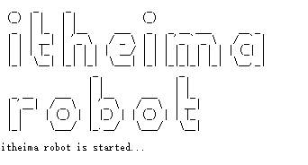
4. 搭建程序入口¶
我们使用cubemx生成的代码都是.c文件,非常不利于我们后面采用面向对象的方式进行编程,为了使用面向对象的cpp语言,我们需要定义这么一个cpp的头文件作为桥梁.
.c文件中是无法直接使用cpp的类,所以我们需要想办法使用cpp来编程.下面这个文件很关键,它是告诉编译器,如果当前文件是cpp文件,就使用c的方式来编译这个文件. 这样我们就可以巧妙的让c文件能够去调用cpp中的函数啦!
- 定义头文件
heimarobot.h
1 2 3 4 5 6 7 8 9 10 11 12 13 14 15 16 17 18 19 | |
- 实现头文件
heimarobot.cpp
1 2 3 4 5 6 7 | |
- 在main.c中调用函数
引入上面我们写好的头文件,然后在main函数中主循环外面初始化我们自己写的函数HeimaRobotInit()
在while循环中调用我们自己编写的HeimaRobotTick()函数
1 2 3 4 5 6 7 8 9 10 11 12 13 | |